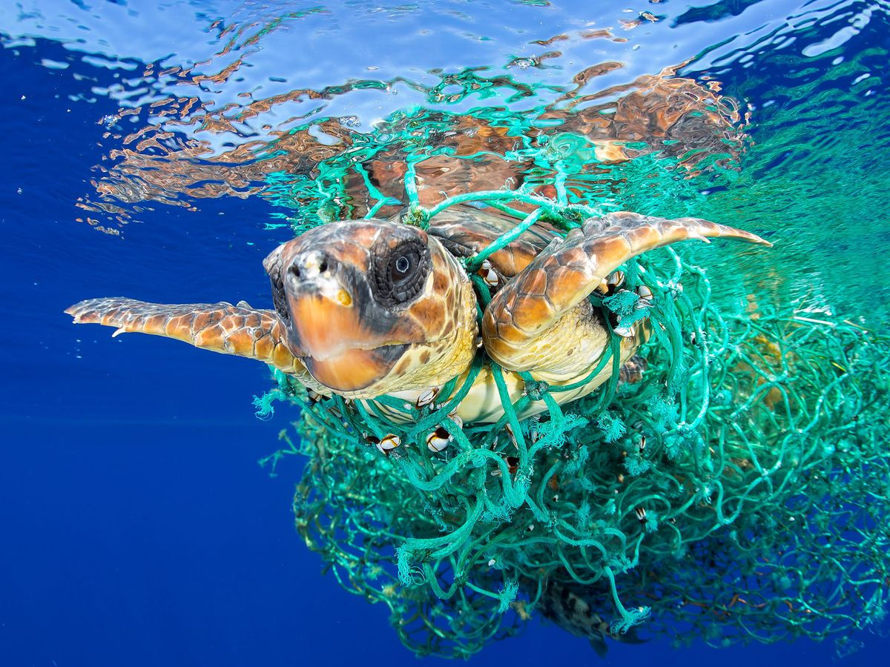
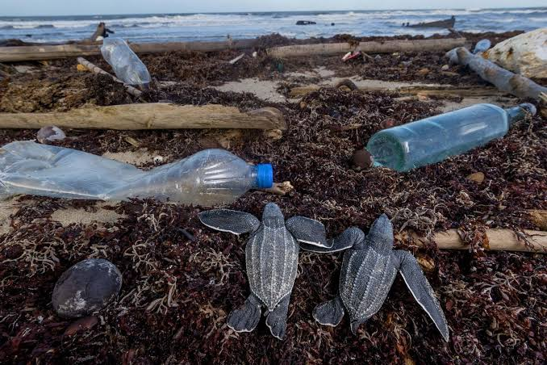
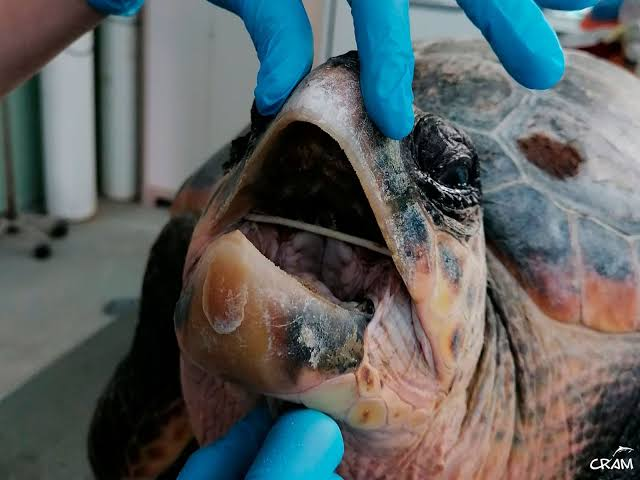
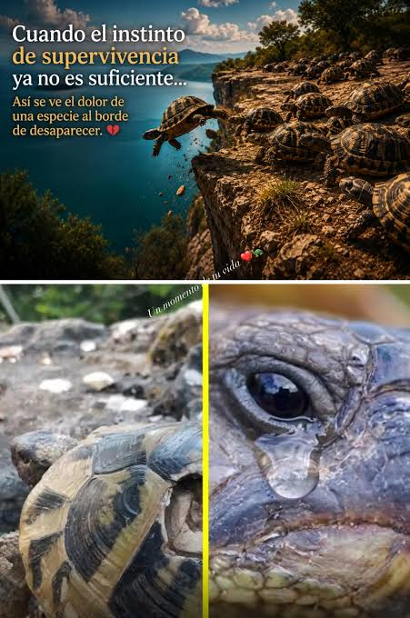

Estas son algunas de las principales amenazas que enfrentan las tortugas

El plástico y la basura llegan al mar y a los ríos. Las tortugas confunden las bolsas con medusas y se las comen, lo que les hace mucho daño.

Construimos ciudades y carreteras donde antes había playas, bosques y ríos. Las tortugas se quedan sin lugar donde vivir, comer y poner sus huevos.

Algunas personas las cazan por su carne, su caparazón o para venderlas como mascotas. Esto reduce mucho su población.
Las tortugas marinas son las más afectadas. Todos los años mueren miles por comer plástico, por quedar atrapadas en redes de pesca o porque las playas donde ponían sus huevos ahora están llenas de edificios y hoteles.
Las tortugas de tierra pierden su hogar cuando talan los bosques o cuando se construyen carreteras. También las capturan para venderlas como mascotas, aunque muchas mueren en el camino.
En ríos y lagunas, la contaminación del agua las afecta mucho. Los químicos de la industria y la basura que tiramos llegan a sus hogares y les causan enfermedades. Además, muchas quedan atrapadas en redes de pescadores.

Pequeñas acciones que hacemos a ellas les afectan mucho
Las tortugas llevan más de 200 millones de años en el planeta. Son parte del equilibrio de la naturaleza: las marinas mantienen limpios los océanos, las terrestres ayudan a dispersar semillas y las de agua dulce mantienen el equilibrio en ríos y lagunas.
Si las tortugas desaparecen, todo el ecosistema se ve afectado. Cuidarlas es cuidar el planeta, y cuidar el planeta es cuidarnos a nosotros mismos.